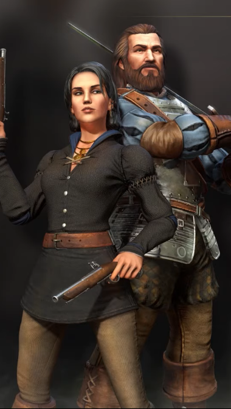
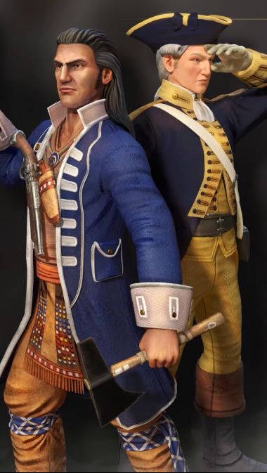
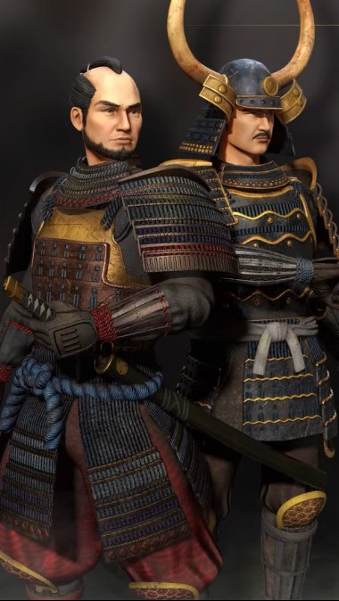

A játékhoz három küldetéssorozat tartozik. A küldetések a XVI. (Blood), a XVIII. (Ice), és a XIX. (Steel) században játszódnak. A küldetések történelmileg nem hitelesek, a történelmi legendák és valóság szándékosan teljesen összekeveredik bennük a játékkészítők ötleteivel. Ennek ellenére izgalmas és teljes mértékben élvezhető történetet ad a játéknak.
Történet

| Blood Ice and Steel | Fire and Shadow | The Asian Dynasties |
|---|---|---|
|  |  |  |
| Az játék alap története | A Warchief edition-el került be | A The Asian Dynasties edition-el került be |
Blood, Ice and Steel
Fire and Shadow
A 15 küldetés hosszú kampány a Black családot történelmi környezetbe foglalja. Az első felvonás, a Fire, Nathaniel Black-et (John Black fia és Amelia Black apja) követi, miközben a család egész vagyonát az amerikai forradalom támogatására fordítja. A második felvonás, a Shadow, Amelia Black fiát, Chayton Blacket követi, és a Fekete-dombokban tett lépéseit a Red Cloud-i és a Great Sioux-i háború alatt. Mindkét jelenet fővárosa a Black családi birtokon játszódik.
The Asian Dynasties
Három új kampányban folytatódik, egy-egy új civilizációhoz. Ezenkívül ezek a kampányok visszatérnek a történelmi, civilizáción alapuló egyjátékos kampányokhoz, amelyek eltérnek az Age of Empires III sorozat korábbi kampányaitól. Minden kampány öt új forgatókönyvből áll. Ezek a sorozat első kampányai, amelyek nem a kitalált Black család körül forognak.